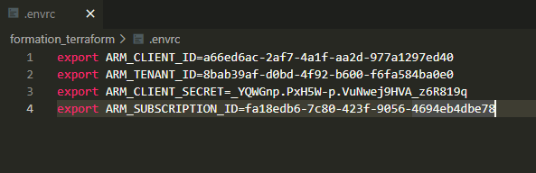
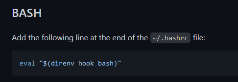

2021-08-09
Formateur: Alexandre Chaussier
1ère partie de 3 formations:
Dans Terraform, le principe de base est l’Infrastructure As Code

Documentation source: 2021-07-24__export_formation_terraform
Suivant votre système et les outils utilisés, vous pouvez installer certains des composants suivants :
VS Code
VIM
terraform {
required_providers {
azurerm = {
source = "hashicorp/azurerm"
version = "2.67.0"
}
helm = {
source = "hashicorp/helm"
version = "2.2.0"
}
}
}
provider "azurerm" {
features {}
}
provider "helm" {
kubernetes {
host = azurerm_kubernetes_cluster.cluster.kube_config.0.host
client_certificate = base64decode(azurerm_kubernetes_cluster.cluster.kube_config.0.client_certificate)
client_key = base64decode(azurerm_kubernetes_cluster.cluster.kube_config.0.client_key)
cluster_ca_certificate = base64decode(azurerm_kubernetes_cluster.cluster.kube_config.0.cluster_ca_certificate)
}
}
#
# Variables
#
variable "cluster_name" {
description = "Cluster name"
type = string
validation {
condition = can(regex("^aks-\\d{2}$", var.cluster_name))
error_message = "Nom de cluster incorrect, ne respecte pas la contrainte."
}
}
variable "default_pool_name" {
default = "default"
description = "Default node pool name"
type = string
validation {
condition = can(regex("^[\\w\\d]*$", var.default_pool_name))
error_message = "Nom de pool incorrect."
}
}
variable "default_pool_vm_count" {
default = 1
description = "Default node pool size"
type = number
validation {
condition = var.default_pool_vm_count >= 1
error_message = "Nombre d'instance incorrect."
}
}
variable "default_pool_vm_size" {
default = "Standard_A2_v2"
description = "Default node pool VM size"
type = string
validation {
condition = contains(["Standard_A2_v2", "Standard_A4_v2"], var.default_pool_vm_size)
error_message = "Type d'instance incorrect."
}
}
#
# Locals
#
locals {
trigram = "ach"
}
#
# Resources
#
resource "azurerm_resource_group" "rg" {
name = "${local.trigram}-formation"
location = "francecentral"
}
resource "azurerm_kubernetes_cluster" "cluster" {
name = "${local.trigram}-${var.cluster_name}"
location = azurerm_resource_group.rg.location
resource_group_name = azurerm_resource_group.rg.name
dns_prefix = "${local.trigram}-${var.cluster_name}"
default_node_pool {
name = var.default_pool_name
node_count = var.default_pool_vm_count
vm_size = var.default_pool_vm_size
}
identity {
type = "SystemAssigned"
}
}
resource "azurerm_kubernetes_cluster_node_pool" "apps_pool" {
name = "apps"
kubernetes_cluster_id = azurerm_kubernetes_cluster.cluster.id
vm_size = "Standard_A2_v2"
node_count = 1
}
resource "helm_release" "wordpress" {
name = "wordpress"
chart = "wordpress"
namespace = "wordpress"
repository = "https://charts.bitnami.com/bitnami"
recreate_pods = true
create_namespace = true
}
#
# Outputs
#
output "kubeconfig" {
description = "Kubeconfig file content"
sensitive = true
value = azurerm_kubernetes_cluster.cluster.kube_config_raw
}
Variables d’environnement:
export ARM_CLIENT_ID=a66ed6ac-2af7-4a1f-aa2d-977a1297ed40
export ARM_TENANT_ID=8bab39af-d0bd-4f92-b600-f6fa584ba0e0
export ARM_CLIENT_SECRET=_YQWGnp.PxH5W-p.VuNwej9HVA_z6R819q
export ARM_SUBSCRIPTION_ID=fa18edb6-7c80-423f-9056-4694eb4dbe78
Ne pas oublier le .gitignore:

Lien vers les fichiers Structurer son projet
https://github.com/kubeapps/kubeapps/blob/master/docs/user/getting-started.md
Gérer le fichier gitignore facilement avec des templates suivant le code utilisé:
https://github.com/direnv/direnv/blob/master/docs/installation.md
Ajouter dans le bashrc:

david.debray@S3233-david:~/Formation_Terraform/formation_terraform$ cd ..
direnv: unloading
david.debray@S3233-david:~/Formation_Terraform$ cd -
/home/david.debray/Formation_Terraform/formation_terraform
direnv: loading .envrc
direnv: export +ARM_CLIENT_ID +ARM_CLIENT_SECRET +ARM_SUBSCRIPTION_ID +ARM_TENANT_ID
david.debray@S3233-david:~/Formation_Terraform/formation_terraform$ env | grep ARM
ARM_CLIENT_ID=a66ed6ac-2af7-4a1f-aa2d-977a1297ed40
ARM_TENANT_ID=8bab39af-d0bd-4f92-b600-f6fa584ba0e0
ARM_CLIENT_SECRET=_YQWGnp.PxH5W-p.VuNwej9HVA_z6R819q
ARM_SUBSCRIPTION_ID=fa18edb6-7c80-423f-9056-4694eb4dbe78
david.debray@S3233-david:~/Formation_Terraform/formation_terraform$ Une list peu prendre des doublons (même valeur qui se répète).
ex: List: ["abc", "ac", "abc"]
Un set ne contient qu’une seule fois la valeur, pas de doublons.
ex: set: ["abc", "ac"]